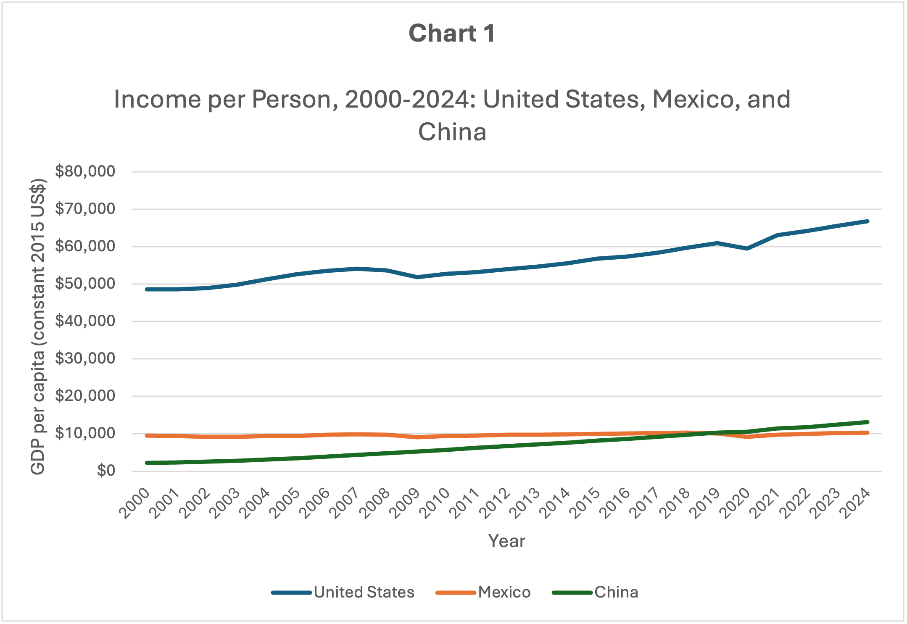
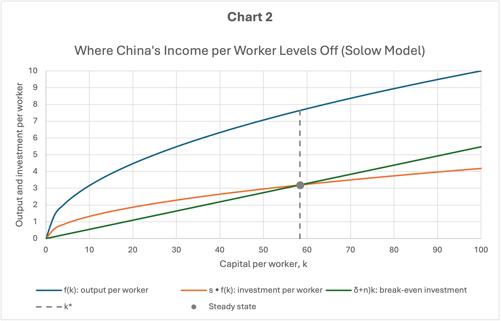

ECON 305: Intermediate Macroeconomic Theory, Old Dominion University, Fall 2026
Rayna Chiavario

From 2000 to 2024 China’s income per person grew exponentially, from $2,237 to $13,119, passing Mexico around 2019. Mexico’s income per person only grew from $9,582 to $10,284. The United States grew slowest, ~38%, however, it still earns ~5 times more per person than China in 2024 at $66,857. China has closed the gap quickly, but it still has a large gap to close.

Savings allow countries to invest in new factories, equipment, and infrastructure which helps the productivity of workers which increases output. As more capital is added each additional investment contributes less to production. Eventually savings are primarily used to replace the deprecating capital which limits further growth. Population growth affects this because a larger workforce means capital must spread across more workers. China saves around 42% of it income compared to the United States, this saves ~half that amount. China has a lower population growth rate of 0.5%, compared to 0.8% in the United States. Considering the Solow growth model, these factors should help China close the income gap. The fact that China continues to fall behind the United States suggests other factors, such as technology, human capital, and institutions also play an important role.

When a government has an effective role within the economy, such as building roads, schools, enforcing contracts, and carrying out policy reliably, it lets businesses invest and us capital productively. On this measure, in 2024 the United States scores 1.30, China 0.70, and Mexico -0.19, which follows the same order as their incomes per person. Chinas score rose from -0.57 in 2002 while Mexico’s slow growth. China’s remaining gap with the United States suggests better intuitions, not just more saving, that is the key to closing it.
China could improve its institutions by creating a more independent court system that makes laws and regulations more consistent. This would allow businesses to have more confidence that their investments, contracts, and property are protected and encourage greater productivity instead of relying heavily on savings and investments to drive economic growth. These changes would require the government to give up some control over the economy and could face resistance from officials who benefit from the current system.
Sources: World Bank, World Development Indicators: GDP per capita (NY.GDP.PCAP.KD), gross capital formation (NE.GDI.TOTL.ZS), population growth (SP.POP.GROW). World Bank, Worldwide Governance Indicators: Government Effectiveness (GE.EST / GOV_WGI_GE.EST).